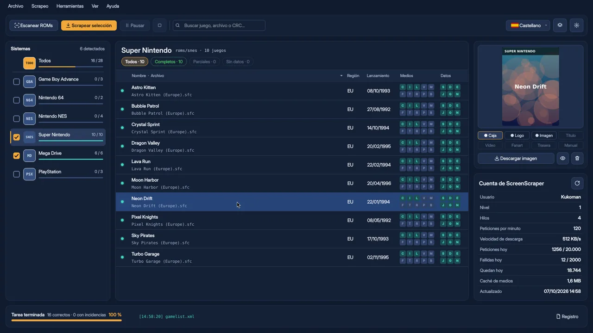

InicioGalería
Capturas
Así se ve por dentro
Las capturas muestran el programa en castellano, con juegos de demostración.
La ficha de cada juego
Carátula, logo, composición, sinopsis, valoración y todos los datos del juego en una sola pantalla. Si algo no te convence, lo cambias tú.
El editor de composiciones
Diseña la imagen que verás en Batocera colocando capas como en un programa de dibujo. Mira el resultado con tus propios juegos antes de aplicarlo a todo el sistema.
Tus preferencias, primero
Elige y ordena las regiones de las que quieres las carátulas y los nombres. Si tu región no existe, se usa la siguiente de tu lista.
Composiciones generadas automáticamente
Ejemplos creados por el programa con la plantilla «Clásica 4:3» (juegos y carátulas de demostración).
Pulsa una captura para verla en grande.
Vídeo
El programa, en marcha
Un repaso rápido por todo lo que hace KukoScrapingFree, de principio a fin.

¿Listo para darle vida a tu colección?
Es gratis, no se instala y funciona en Windows y Linux.